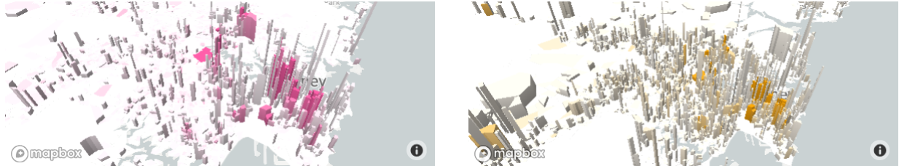
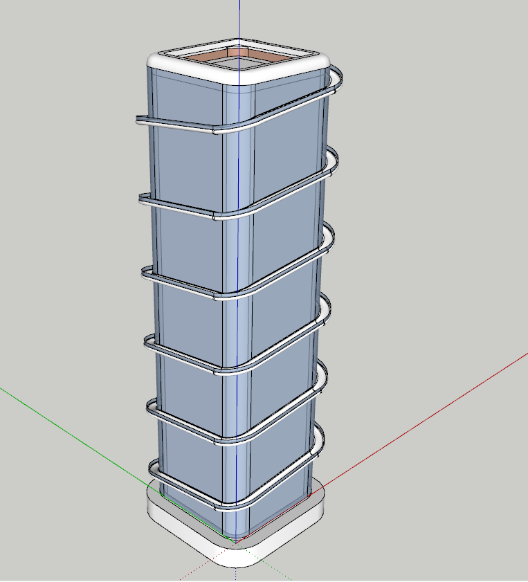
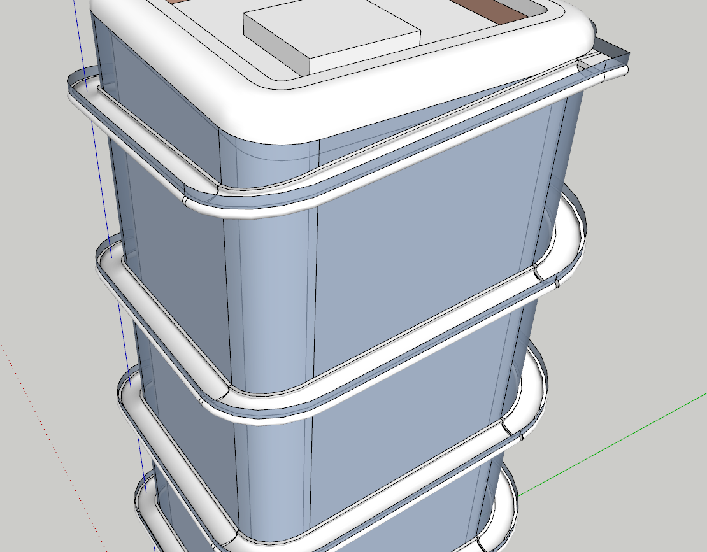
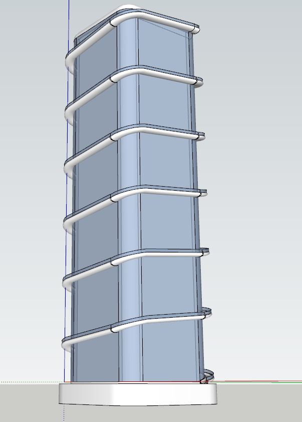

From the last data survey, we can clearly see that there are many job opportunities in the city center and there are many kinds of jobs. Many young people are hard to be accepted by the company's HR because of lack of work and practical experience. Young people will have many opportunities in the downtown area. Since we can't let a lot of people live in the city center, try to expand and relocate the city center, so that there are many job opportunities in the areas where young people live.
my design
My design is an office building built away from the Centre of Sydney. The building has a unique design that has a slide around the building that runs from the top floor to the ground. The building is based on the design concept of the US Federal Bank Building. They placed a long high-altitude slide on the top floor of the building. Many people came to the slide of the US Federal Bank Building to experience the feeling of excitement. According to my survey, 80% of young people do not choose to go home to rest after a day of exhaustion, and many people like to go to bars and nightclubs. There are also a large number of people who like to do some exciting things to stimulate their tired spiritual world. “High-altitude slides” have become a very good leisure project. Young people can experience the excitement of the slides when they get off work, and take the slide to the bottom of the building. In the building, I also attracted some entertainment venues (bars, nightclubs, etc.) to invest, so that young people can have enough space to relax.



My design is for young people to have a better life and work space. Young people have great potential. Young people are the hope of humanity in the future. We only have to try our best to tap their abilities, which will make our city and the world is more beautiful. The real purpose of Urban Transformation is that people can live better.